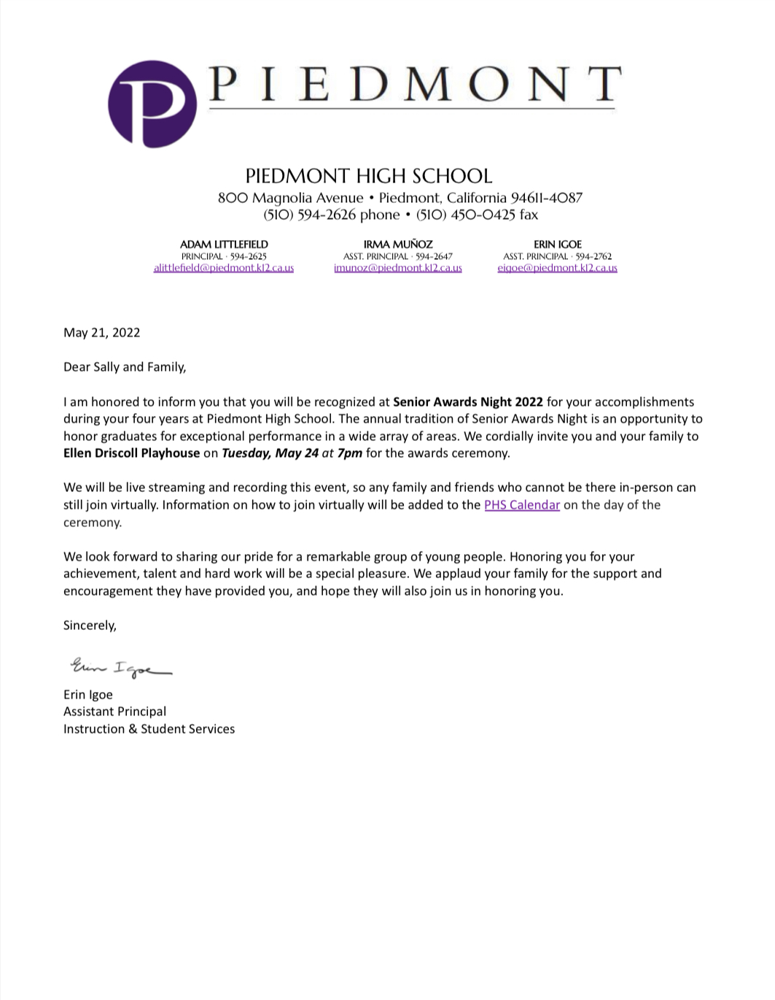

I'm really proud of how the image for my Senior Portrait came out because it really captures the pure joy I feel when riding horses and it's the last photo I took with Kiro before we had to put him down, sot he photo means a lot to me.
I'm really proud of this because I got a senior award and it just feels really good to know that I made a mark on this school, and made a mark as a part of the class of 2022. I just feels really good to know that other people see the successes I have accomplished over the last four years.